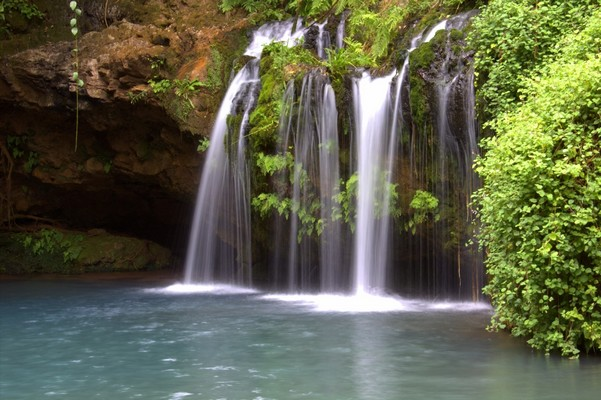

Recreational Tourism
☰ open
The main aims of recreational tourism include active participation in some kind of recreational activity , or, participating in a sport or cultural event as spectator. (Going to a play in a theatre). Intellectual recreational activities are also realized within the framework of tourism.
.jpeg)
.jpeg)
Funscapes :
The hub,Karen.
Funscapes has something for all ages and its an indoor mini amusement park that is opened seven days a week rain and Shine. They have video games, mini rollercoaster and rides. The smaller children can play in the largFunscapes has something for all ages and its an indoor mini amusement park that is opened seven days a week rain and Shine. They have video games, mini rollercoaster and rides.
GP karting:
If you are looking for fun things to keep your young ones engaged then this place might do the trick but its not exactly engaging for Adults as the track isn't really much of a challenge.A chance to race your friends and colleagues and see who has skill and courage. Well worth it albeit the go karts are becoming a bit old and prone to inconsistent performance.
Carnivore road off Langata Road. Racing Circuit, Nairobi City
The chaka Ranch:
Chaka Ranch is a 'must-go' place. As a Child, Teenager and Adult wow the owners sure do know how to pull in a crowd. The vast area with loads of activities - team building at the 'climbing towers' hahaha and the 'Giant slide' OMG the bestest hehehe the 'soccer shoot-out' just sooo amazing. And not forgetting the 'Quad Bikes' Holy Wow those bikes and the rides waaaaw.
Nyeri, Kenya
.jpeg)
The Forest:
Limuru,Kenya
The Forest possesses character and wonder in abundance, and it all can be absorbed at the restaurant and lounge area at the adventure center. The view delights as far as the eye can see into the Aberdare Ranges and on a clear sunny day, Mount Kenya is majestically visible. We source fresh produce from the local area to bring you a memorable and unique culinary experience. Whether you’re keen to sample our extensive buffet to dining in an elegant space, we have everything to delight your taste buds.

Paradise Lost:
Paradise Lost Resort in Kenya was discovered in 1996 by coffee farmers in Kenya. Paradise Lost Resort in Kiambu is beautiful scenery which oozes such beauty that the name fittingly benefits the surrounding and the nature. The main attraction at Paradise Lost Resort in Kiambu which is a 54 acre farm is the Paradise Lost Resort caves in Kenya that are eroded by the nearby Gichi River in Kenya with their entrance screened by an impressive cascading Paradise Lost waterfall in Kenya.
Kiambu, Kenya
Paintball Fury:
Waterfront, Karen
Paintball is a sport or entertainment in which the objective is to knock out/eliminate your opponent by hitting a ball with paint fired from a Paintball Marker. Paintball is played with a potentially limitless variety of rules and variations, which are specified before the game begins.
Bill gates. Founder Of Bill&Melinda gates foundation.
"Happiness is a choice a repititive one."
Chris Brown. Singer-songwriter.
“Everywhere that I’ve been, the only thing I see is beautiful people.”